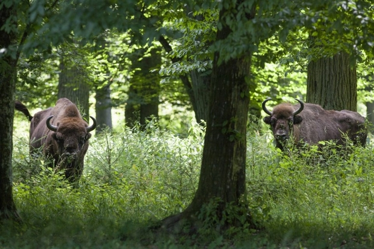

Puszcza Białowieska

Puszcza Białowieska położona na terytorium Polski i Białorusi jest rozległą połacią pierwotnego lasu, w którym występują zarówno drzewa iglaste, jak i liściaste. Obszar wpisany rozciąga się na powierzchni liczącej 141 885 ha. Jest to miejsce unikalne z punktu widzenia zachowania różnorodności biologicznej. Występuje tu najliczniejsza populacja żubra europejskiego, gatunku, który symbolizuje Puszczę Białowieską.
W 1979 r. na Listę Światowego Dziedzictwa została wpisana część obszaru Białowieskiego Parku Narodowego. Białoruska część Puszczy Białowieskiej została wpisana w 1992 r. jako rozszerzenie wpisu. Od 1992 r. obie części Puszczy stanowią jeden obiekt transgraniczny. W 2014 roku miejsce Światowego Dziedzictwa zostało rozszerzone, przede wszystkim po stronie polskiej (z powierzchni 5.069 ha do 59.576,09ha).